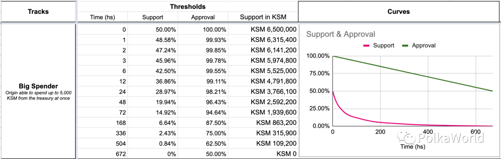
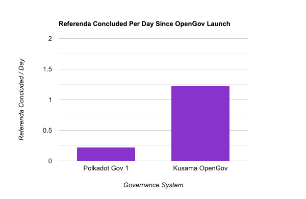
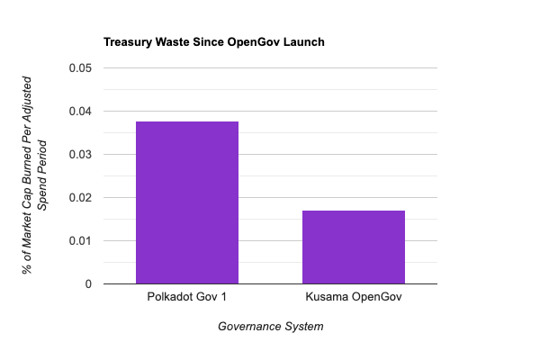

<!DOCTYPE html>
<html lang="en">

<head>
  <meta charset="utf-8" />
  <meta name="viewport" content="width=device-width, initial-scale=1.0, maximum-scale=1.0, user-scalable=no" />

  <title>OpenGov</title>
  <link rel="shortcut icon" href="./../../../assets/favicon.ico" />
  <link rel="stylesheet" href="./../../../dist/reset.css" />
  <link rel="stylesheet" href="./../../../dist/reveal.css" />
  <link rel="stylesheet" href="./../../../assets/styles/PBA-theme.css" id="theme" />
  <link rel="stylesheet" href="./../../../css/highlight/shades-of-purple.css" />

  <link rel="stylesheet" href="./../../.././assets/styles/custom-classes.css" />

</head>

<body class="site">
  <header class="site-header">
    <!-- This logo is a link only on the watching server, not the production build -->
    <a href="">
      
    </a>
  </header>
  <main class="reveal">
    <article class="slides">
      <section  data-markdown><script type="text/template">

# OpenGov

<aside class="notes"><p>Hello!</p>
<p>I&#39;m Bradley Olson</p>
<p>Was student at first Academy in Cambridge</p>
<p>Currently on Parachains Core Team at Parity</p>
<p>Making Polkadot truly decentralized requires a robust, agile, and democratic system of governance.</p>
<p>Gavin has put a lot of effort over the last year or so into crafting a system which does those words justice, OpenGov.</p>
<p>I&#39;m here to give you an overview of what OpenGov is and to surface some new information about how it is performing on Kusama.</p>
<p>So lets get to it</p>
</aside></script></section><section  data-markdown><script type="text/template">
## Overview

<pba-flex center>

- Why blockchain governance?
- Why on-chain?
- Goals of on-chain governance
- Initial Solution, Governance V1
- Improvement, OpenGov
- How is it going? By the numbers.
- OpenGov and you

</pba-flex>
</script></section><section  data-markdown><script type="text/template">
## Reasons for Blockchain Governance

<pba-flex center>

- Software as executive branch
  - Applies existing laws (code) in pre-defined ways
  - Protocol security ensures the letter of those laws is followed
- But evolving protocols need a legislative branch
  - To update the laws (code)
  - To rectify cases where letter != spirit (bugs)
  - To trigger parts of the system that aren't on a set schedule
  - To spend treasury funds
- Legeslative can be on or off chain

</pba-flex>
</script></section><section  data-markdown><script type="text/template">
## Why On-chain?

<pba-cols style="font-size:smaller">
<pba-col center>

- Off-chain governance

  - Formal proposal by dev team
  - Discussions, debates, and media campaigns
  - Hard fork

- Issues
  - Centralization
  - Low throughput
  - Long decision period
  - Little accessibility

</pba-col>
<pba-col center>

<!-- set height*width in px, where full screen is 1920*1080 -->


<!-- set height*width in px, where full screen is 1920*1080 -->


</pba-col>
</pba-cols>
</script></section><section  data-markdown><script type="text/template">
## Goals of On-chain Governance

<pba-flex center>

- **Transparency**: Decisions by who and by what rules?
- **Decentralization**: Distributed power, weighted only by commitment and conviction
- **Security**: Harmful proposals don't pass or have limited scope
- **Accessibility**: Easy to draft proposal, to receive vote, to vote yourself, and to vote by proxy
- **Concurrency**: Maximize simultaneous referenda as security allows
- **Speed**: Each referendum completed as fast as security allows
- **Agility**: Speed is responsive to support/controversy

</pba-flex>
</script></section><section  data-markdown><script type="text/template">
## Governance V1

<pba-cols>
<pba-col center>

<!-- set height*width in px, where full screen is 1920*1080 -->


</pba-col>
<pba-col center style="font-size:smaller">

- Tri-cameral system: Referenda, council, and technical committee
- Single track
- 1 referendum at a time
- Root origin (Unlimited Power!)
- 28 day referendum
- 1 month minimum enactment period
- Emergency handled technical committee
- Cancellations by council and technical committee
- Most proposals initiated by council
- Fully council controlled roles such as tipping

</pba-col>
</pba-cols>
</script></section><section  data-markdown><script type="text/template">
## Gov V1, Room for Improvement

<pba-cols>
<pba-col left>

The good:

- Security
- Transparency

The bad:

- Decentralization
- Concurrency
- Speed
- Agility

</pba-col>
<pba-col center>

<!-- set height*width in px, where full screen is 1920*1080 -->


</pba-col>
</pba-cols>
</script></section><section  data-markdown><script type="text/template">
## OpenGov Overview

<pba-cols>
<pba-col center>

- Origins and tracks
- Lifecycle of a referendum
- Support and approval threshold curves
- The Polkadot Fellowship
- Vote delegation by track
- OpenGov and governance goals

</pba-col>
<pba-col center>

<!-- set height*width in px, where full screen is 1920*1080 -->


</pba-col>
</pba-cols>
</script></section><section  data-markdown><script type="text/template">
## Origins

<pba-flex center>

- Level of privilege that code executes with
- Similar to user on Unix
- Proposal is two things
  - Operation: What should happen
  - Origin: Who authorizes it
- Many operations require a specific origin

</pba-flex>
</script></section><section  data-markdown><script type="text/template">
<!-- set height*width in px, where full screen is 1920*1080 -->


## Origins and Tracks

- Each origin is served by a referendum track
- A track can serve more than one origin
- These tracks are totally independent from one another
- Track examples: Root, ParachainAdmin, BigSpender, Tipper
- Emergency tracks: ReferendumCanceler, ReferendumKiller
</script></section><section  data-markdown><script type="text/template">
## Track Parameters

<pba-cols>
<pba-col>

Parameters give us the ability to find an optimal balance between security and throughput.

The security needs of the Tipper track are very different than those of the Root track.

</pba-col>
<pba-col>
<pba-flex center>

- Lead-in period duration
- Decision period duration
- Confirmation period duration
- Minimum enactment period
- Concurrency, how many referenda can run in this track at a time
- Support and Approval threshold curves

</pba-flex>
</pba-col>
</pba-cols>
</script></section><section  data-markdown><script type="text/template">
<pba-cols>
<pba-col>

### OpenGov Tracks

</pba-col>
<pba-col>


</pba-col>
</pba-cols>

<aside class="notes"><p>Highlight difference between parameters of WhiteListedCaller and Root tracks</p>
</aside></script></section><section  data-markdown><script type="text/template">
## Criteria for Passing a Proposal

- Approval: Approving votes/total votes cast, weighted by conviction
  - Conviction: Locking tokens for longer periods scales their voting impact up to a maximum of 6x with a lockup duration of 896 days
- Support: Approving votes/total possible vote pool, disregarding conviction
</script></section><section  data-markdown><script type="text/template">
## Decision and Confirmation Periods

- If Approval and Support thresholds met, confirmation period begins
- Approval and Support must remain above respective thresholds for entire confirmation period
- Confirmation period concludes -> proposal approved early
- Decision period expires -> proposal rejected
- There is only one decision period, during which a proposal can potentially enter and leave many confirmation periods if thresholds aren't consistently met
</script></section><section  data-markdown><script type="text/template">
## Lifecycle of A Referendum

<!-- set height*width in px, where full screen is 1920*1080 -->


<aside class="notes"><p>Steps in order: <strong>Proposing, Lead In, Deciding, Confirming, Enactment</strong></p>
</aside></script></section><section  data-markdown><script type="text/template">
## Support and Approval Threshold Curves

<pba-flex center>

- We want agility
  - Well supported proposals pass quickly
  - Controversial proposals get more deliberation
- Addressed with time varying curves
  - Support threshold
    - Starts at ~50%
    - Ends at minimum secure turnout for track <br/>(EX: Big Spender ends at 0 + epsilon %)
  - Approval threshold
    - Starts at 100%
    - Ends at 50 + epsilon %
- Monotonically decreasing at rates determined by track specific security needs

</pab-flex>
</script></section><section  data-markdown><script type="text/template">
## Example Support and Approval Curves



<aside class="notes"><p>From PolkaWorld Article in Resources</p>
</aside></script></section><section  data-markdown><script type="text/template">
## Vote Delegation

<pba-cols style="font-size:smaller">
<pba-col center>

- Traditional delegation: You entrust one third party with your vote on all matters
- Delegation by track: You may delegate your vote to one or more third parties on a per track basis
- EX: Tipper vote delegated to local ambassador, WhiteListedCaller vote delegated to Parity Technologies, vote retained for all other tracks
- This is likely a first!

</pba-col>
<pba-col center>


</pba-col>
</pba-cols>
</script></section><section  data-markdown><script type="text/template">


## OpenGov Acting Under Pressure

Typical path to safety: Lower throughput and restricted origins

But in emergencies we may need to pass proposals that both require root origin and are time critical!

Solution: Some sort of oracle capable of providing expert information
</script></section><section  data-markdown><script type="text/template">
## Oraclization of Expert Information

<pba-flex center>

1. Track everyone's level of expertise
1. Allow experts to register sentiment
1. Aggregate opinions by level of expertise

</pba-flex>

> But how are these steps accomplished?
</script></section><section  data-markdown><script type="text/template">
<!-- .slide: data-background-color="#4A2439" -->

## Enter...<br/><br/>The Polkadot Fellowship
</script></section><section  data-markdown><script type="text/template">
Purely on-chain membership body to recognize and compensate all individuals who hold and use expert knowledge of Polkadot in line with its broad interest and philosophy

Members hold rank denoting proven level of expertise and commitment as recognized by their peers and, for higher ranks, through general referendum.
</script></section><section  data-markdown><script type="text/template">
## Who Make up the Fellowship?

<pba-col center>

- Experts in the Polkadot core protocol who maintain a consistent level of active contribution
- Notably this does not include core developers of independent parachain protocols, which should develop their own protocol specific fellowships as needed.
- Trajectory
  - Currently: < 100 core developers, mostly from Parity or the Web3 Foundation
  - Next year or two: Hundreds
  - Ideal far future: Tens of thousands, independent of any centralized entity
- Only one fellowship for Polkadot and Kusama

</pba-col>
</script></section><section  data-markdown><script type="text/template">
## Function of the Fellowship

<pba-col center>

- WhiteListedCaller track
  - Root privileges
  - More agile
  - Maintains reasonable safety via Fellowship
- White list proposals must pass two votes
  - Expertise weighted Fellowship vote via second referendum pallet instantiation
  - Same general referendum as other tracks, still requiring majority vote from DOT holders
- Just an oracle!
- Secondarily intended to cultivate a long term base of Polkadot core developers outside of Parity

</pba-col>

<aside class="notes"><p>Stress that as an oracle, the Fellowship can&#39;t take any action on its own. Any white listed call will still require substantial DOT-holder backing.</p>
</aside></script></section><section  data-markdown><script type="text/template">
## OpenGov and Governance Goals

<pba-col center>

- Open source + single process + track abstraction -> Transparency
<!-- .element: class="fragment" data-fragment-index="1" -->
- Liberal proposal creation + greater throughput + per-track delegation -> Accessibility
<!-- .element: class="fragment" data-fragment-index="2" -->
- Accessibility + No special bodies -> Decentralization
<!-- .element: class="fragment" data-fragment-index="3" -->
- Limited origins + emergency tracks + white list -> Security
<!-- .element: class="fragment" data-fragment-index="4" -->
- Multiple tracks + low risk tracks -> Concurrency
<!-- .element: class="fragment" data-fragment-index="5" -->
- Low risk tracks + early confirmation -> Speed
<!-- .element: class="fragment" data-fragment-index="6" -->
- Support and approval threshold curves + white list -> Agility
<!-- .element: class="fragment" data-fragment-index="7" -->

</pba-col>
</script></section><section  data-markdown><script type="text/template">
<!-- .slide: data-background-color="#000" -->

# OpenGov<br/><br/>By The Numbers
</script></section><section  data-markdown><script type="text/template">
## Governance Activity

<!-- set height*width in px, where full screen is 1920*1080 -->


> 5.5x more daily governance activity
</script></section><section  data-markdown><script type="text/template">
## Proposal Origins

<!-- set height*width in px, where full screen is 1920*1080 -->


> Proposals now primarily authored via democracy
</script></section><section  data-markdown><script type="text/template">
## Treasury Usage



> Treasury funds used more efficiently
</script></section><section  data-markdown><script type="text/template">
## OpenGov and You

<pba-col center>

- Participate in OpenGov and Polkadot Fellowship on Polkadot and Kusama
- Can customize OpenGov instances per parachain
- Custom fellowships per parachain
- Potentially create non-technical fellowships, such as a fellowship for brand ambassadors

</pba-col>
</script></section><section  data-markdown><script type="text/template">
## Resources

<pba-col center>

1. [PolkaWorld Hands-On OpenGov](https://polkaworld.medium.com/a-hands-on-guide-for-kusamas-open-gov-governance-system-98277629b0c5)
1. [OpenGov Article from Moonbeam Team](https://moonbeam.network/blog/opengov/)
1. [Gavin’s Polkadot Decoded 2022 talk](https://www.youtube.com/watch?v=EF93ZM_P_Oc) <!-- markdown-link-check-disable-line -->
1. [Gov V1 tracking](https://polkadot.polkassembly.io/)
1. [OpenGov tracking](https://kusama.subsquare.io/)

</pba-col>
</script></section><section  data-markdown><script type="text/template">
<!-- .slide: data-background-color="#4A2439" -->

# Questions
</script></section><section  data-markdown><script type="text/template">
## OpenGov in Action

<pba-flex center>

- Vote - https://kusama.subsquare.io/referenda
- Delegate vote - https://kusama.subsquare.io/referenda
- Submit proposal - https://polkadot.js.org/apps/?rpc=wss%3A%2F%2Fkusama-rpc.dwellir.com#/referenda

</pba-flex>
</script></section>
    </article>
  </main>

  <script src="./../../../dist/reveal.js"></script>

  <script src="./../../../plugin/markdown/markdown.js"></script>
  <script src="./../../../plugin/highlight/highlight.js"></script>
  <script src="./../../../plugin/zoom/zoom.js"></script>
  <script src="./../../../plugin/notes/notes.js"></script>
  <script src="./../../../plugin/math/math.js"></script>

  <script src="./../../../assets/plugin/mermaid.js"></script>
  <script src="./../../../assets/plugin/mermaid-theme.js"></script>

  <script src="./../../../assets/plugin/chart/chart.js"></script>
  <script src="./../../../assets/plugin/chart/chart.min.js"></script>

  <script src="./../../../assets/plugin/tailwindcss.min.js"></script>

  <script>
    function extend() {
      var target = {};
      for (var i = 0; i < arguments.length; i++) {
        var source = arguments[i];
        for (var key in source) {
          if (source.hasOwnProperty(key)) {
            target[key] = source[key];
          }
        }
      }
      return target;
    }

    // default options to init reveal.js
    var defaultOptions = {
      controls: true,
      progress: true,
      history: true,
      center: true,
      transition: 'default', // none/fade/slide/convex/concave/zoom
      slideNumber: true,
      mermaid: {
        startOnLoad: false,
        logLevel: 3,
        theme: 'base',
        themeVariables: {
          primaryColor: purple,
          primaryTextColor: white,
          primaryBorderColor: pink,
          lineColor: pink,
          secondaryColor: lightPurple,
          tertiaryColor: lightPurple,
        },
      },
      chart: {
        defaults: {
          color: 'lightgray', // color of labels
          scale: {
            beginAtZero: true,
            ticks: { stepSize: 1 },
            grid: { color: "lightgray" }, // color of grid lines
          },
        },
        line: { borderColor: ["#ccc", "#E6007A", "#6D3AEE"], "borderDash": [[5, 10], [0, 0]] },
        bar: { backgroundColor: ["#ccc", "#E6007A", "#6D3AEE"] },
      },
      plugins: [
        RevealMarkdown,
        RevealHighlight,
        RevealZoom,
        RevealNotes,
        RevealMath,
        RevealMermaid,
        RevealChart
      ]
    };

    // options from URL query string
    var queryOptions = Reveal().getQueryHash() || {};

    var options = extend(defaultOptions, {"width":1400,"height":900,"margin":0,"minScale":0.2,"maxScale":2,"transition":"none","controls":true,"progress":true,"center":true,"slideNumber":true,"backgroundTransition":"fade"}, queryOptions);
  </script>


  <script>
    Reveal.initialize(options);
  </script>
</body>

</html>